/dpr on the arty a7-100
March 2026 | FPGA, Verilog, DFX, Dynamic Reconfiguration | 12 min read
I built this to get hands-on with the Artix-7 DFX flow, specifically how the ICAPE2 primitive works, what the pblock constraints actually enforce, and what Vivado complains about when you get them wrong. Getting a clean implementation took two rounds of DRC fixes that aren't well documented, so this writeup covers both.
What is DPR?
In a normal FPGA flow, the whole chip gets configured at power-on and stays that way. Want to change what it does? You reprogram the whole thing: stop everything, load a new bitstream, and start again.
Dynamic Partial Reconfiguration splits the chip into two regions: a static region that gets configured once at startup and never changes, and a reconfigurable partition (RP) that can be swapped out at runtime by loading a partial bitstream. The static region keeps running the entire time (clocks, counters, interfaces, all of it) while only the RP gets reconfigured.
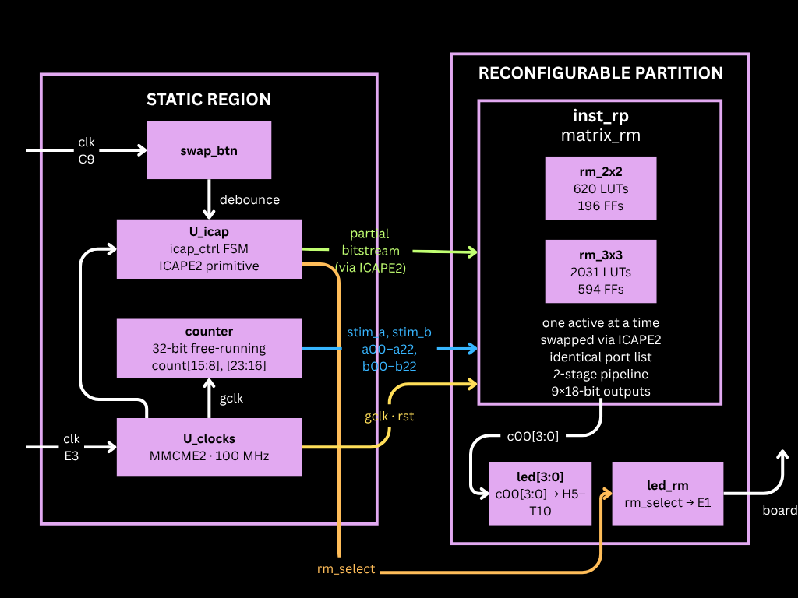
Full signal flow of the design. The static region feeds stimuli into the RP every cycle and triggers reconfiguration via ICAPE2 on a button press.
The reconfiguration works by loading a partial bitstream, a small file covering only the configuration frames that correspond to the RP region. The full bitstream here is 3.8 MB. The partial bitstreams are 475 KB each, about 12% of the full size.
Design Overview
The static region has four things: a clock manager (MMCME2_ADV at 100 MHz), a 32-bit free-running counter that generates test stimuli, an ICAP controller that handles runtime reconfiguration, and the top-level I/O assignments. The reconfigurable partition holds one of two matrix multiply modules at any given time.
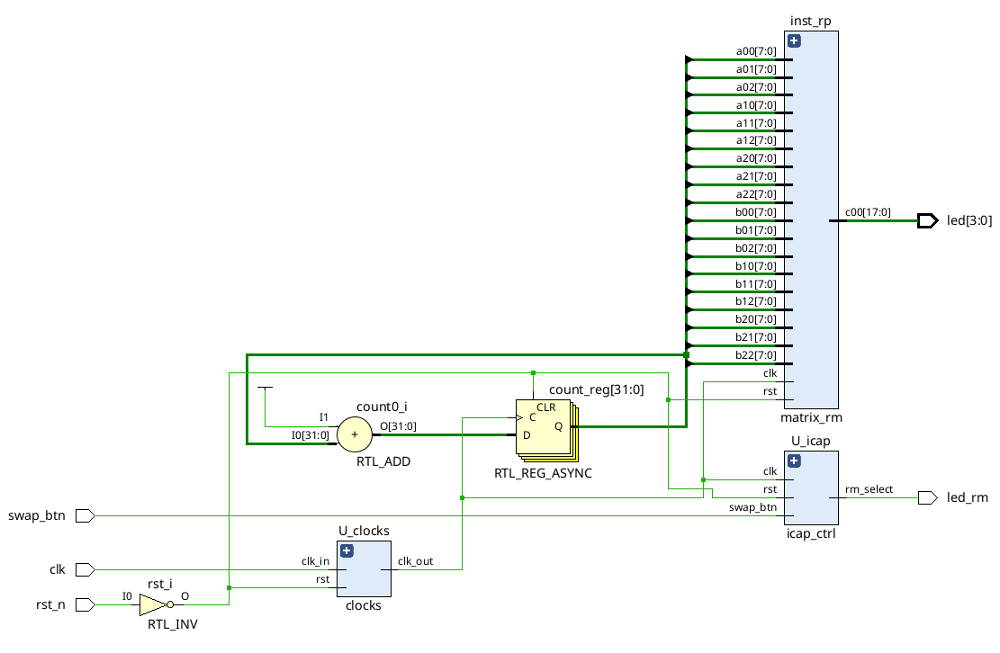
RTL schematic from Vivado. inst_rp (matrix_rm) and U_icap (icap_ctrl) are cleanly separated from the static counter and clock logic.
Both reconfigurable modules must have an identical port list. This is a hard DFX requirement. Both RMs expose 18 8-bit inputs (a full 3×3 matrix A and B interface) and nine 18-bit outputs (result matrix C). The 2×2 module ties off the unused third row and column ports to zero. The static region sees the same interface regardless of which RM is loaded.
| Module | Pipeline Stages | LUTs (OOC synth) | FFs | Notes |
|---|---|---|---|---|
| rm_2x2 | 2 | 620 | 196 | Unused ports tied to 18'd0 |
| rm_3x3 | 2 | 2031 | 594 | Full 9-element multiply-accumulate |
| Static region | N/A | 727 (post-impl) | 287 | ICAP FSM, MMCM, counter, I/O |
Both RMs are synthesized out-of-context (OOC), each with its own synthesis run, independent of the static region. Implementation then combines the static checkpoint with one RM at a time. This produces two implementation runs: impl_1 with the 2×2 RM active, and child_0_impl_1 with the 3×3 RM active.
The Pblock and DRC HDPR-45
DFX requires a pblock, a floorplan constraint that physically assigns the reconfigurable cell to a specific region of the FPGA fabric. This forces the router to keep all RP logic and routing within a defined boundary so that partial reconfiguration cannot disturb the static region's routing.
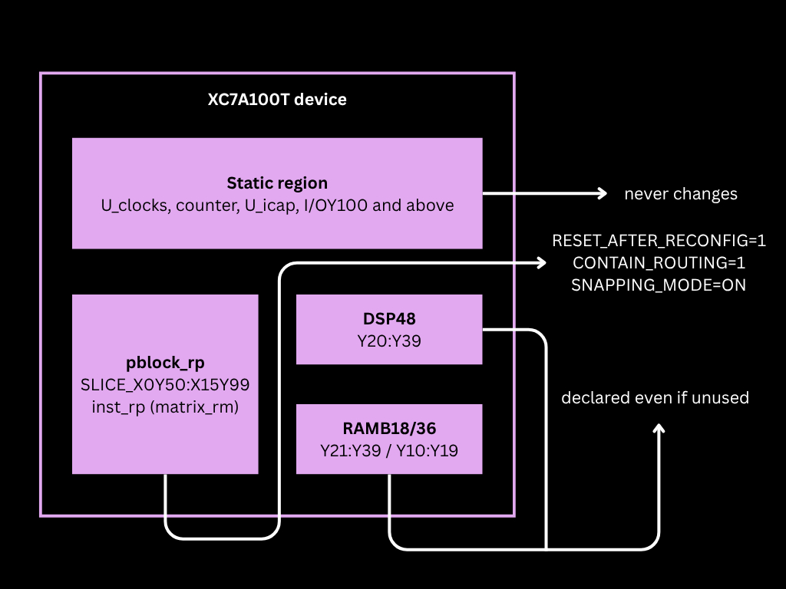
The pblock rectangle on the XC7A100T. Every resource type that physically exists within that rectangle has to be explicitly declared, even if the design does not use it.
The initial pblock only declared SLICE resources. This triggered DRC HDPR-45 on both implementation runs:
The SLICE_X0Y50:SLICE_X15Y99 region on the XC7A100T contains DSP48 and BRAM columns. Vivado requires every resource type physically present in the pblock rectangle to be explicitly claimed, even if the design does not use them. Rather than guessing the Y indices, I queried the device directly:
get_sites -of_objects [get_pblocks pblock_rp] -filter {SITE_TYPE =~ DSP48*}
get_sites -of_objects [get_pblocks pblock_rp] -filter {SITE_TYPE =~ RAMB*}One thing the query turned up: RAMB18 starts at Y21, not Y20. The device skips Y20 in that column. Guessing the range would have missed this. The fixed pblock:
resize_pblock [get_pblocks pblock_rp] -add {SLICE_X0Y50:SLICE_X15Y99}
resize_pblock [get_pblocks pblock_rp] -add {DSP48_X0Y20:DSP48_X0Y39}
resize_pblock [get_pblocks pblock_rp] -add {RAMB18_X0Y21:RAMB18_X0Y39}
resize_pblock [get_pblocks pblock_rp] -add {RAMB36_X0Y10:RAMB36_X0Y19}
set_property HD.RECONFIGURABLE 1 [get_cells inst_rp]
set_property CONTAIN_ROUTING 1 [get_pblocks pblock_rp]
set_property SNAPPING_MODE ON [get_pblocks pblock_rp]
set_property RESET_AFTER_RECONFIG 1 [get_pblocks pblock_rp]196 Critical Warnings: FF INIT Without Reset
After fixing HDPR-45, a second batch of DRC warnings came up, 196 of them, all the same:
Every register in the reconfigurable partition had INIT=1'b0 in the netlist but no explicit reset. This is a DFX-specific issue: after partial reconfiguration, the FPGA loads new configuration frames, but FF INIT values are only guaranteed to be applied if reset is asserted. Without it, the FFs can come up in an unknown state after the swap.
Vivado flags this per-bit, one warning per FF across both pipeline stages of both RMs. That's where the 196 came from. The fix is one property on the pblock:
set_property RESET_AFTER_RECONFIG 1 [get_pblocks pblock_rp]This tells Vivado to assert reset across the reconfigurable region after each partial reconfiguration completes, before handing the RP back to normal operation. All 196 cleared after adding this. The remaining 10 warnings were PDRC-61/62, dangling O5 outputs from LUT packing. That's a normal placer artifact and not actionable.
Device View
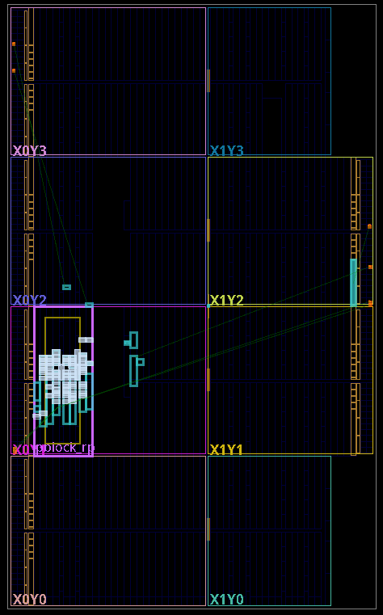
Full device view post-implementation. The pink box is pblock_rp. The logic cluster inside it is the placed matrix multiply logic. Everything outside the pblock is the static region.
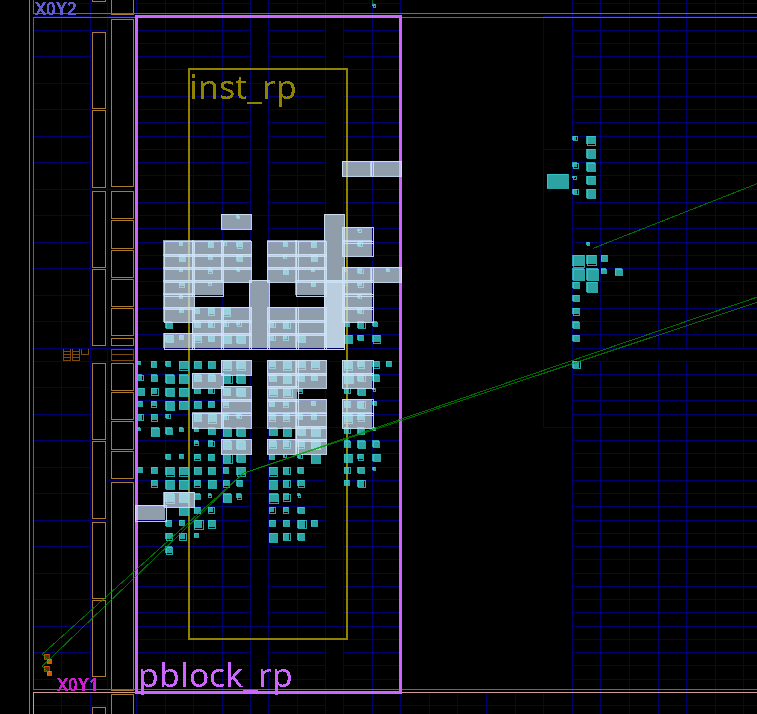
Zoomed into the pblock. The yellow box is the inst_rp reconfigurable cell boundary, the pink box is the pblock constraint. The placed LUTs and FFs are visible in the lower portion of the region.
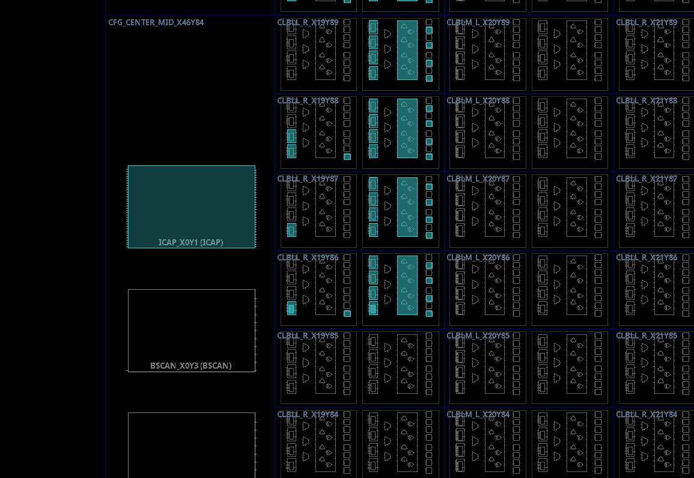
ICAP_X0Y1 placed on the device next to BSCAN_X0Y3, the actual silicon location of the ICAPE2 primitive that the ICAP controller drives.
The ICAP Controller
The ICAP controller sits in the static region and streams partial bitstream data into the ICAPE2 primitive when a button press is detected. That stream is what triggers the RP reconfiguration.
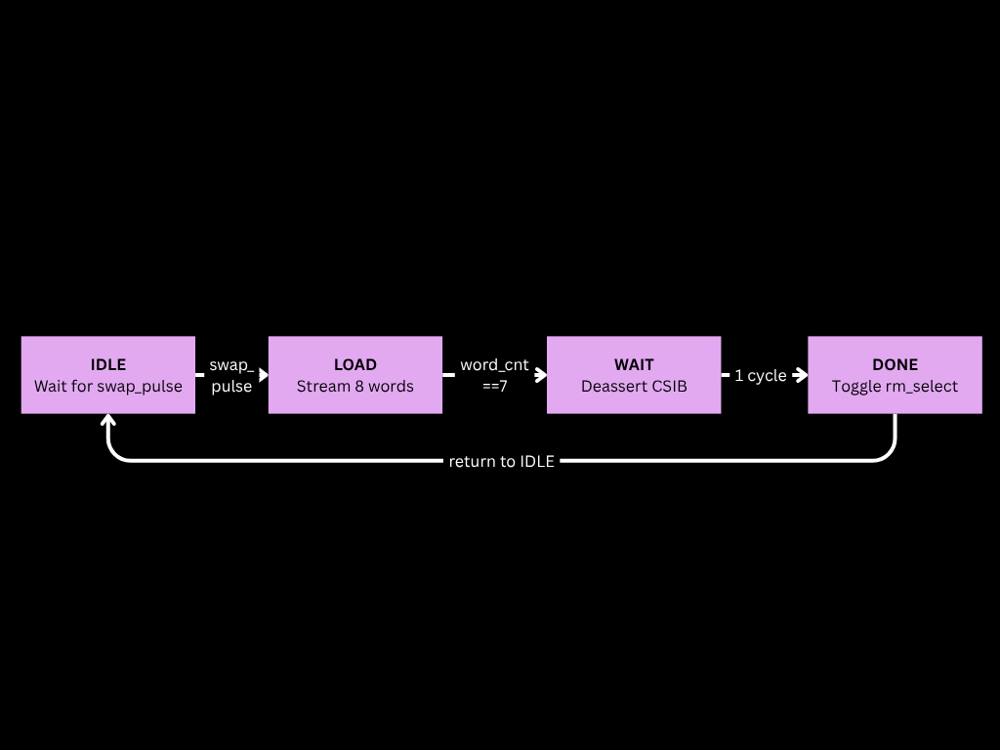
ICAP FSM state diagram. Four states, loops back to IDLE after each swap.
In IDLE, the controller waits for a debounced pulse from BTN1. The debounce uses a 20-bit counter. At 100 MHz that gives around 10 ms of settle time before a press is accepted.
In LOAD, CSIB (chip select, active low) and RDWRB (write enable, active low) are asserted, and bitstream words get clocked into ICAPE2.I one per cycle. The 7-series ICAPE2 requires byte-swapped data. The bit order within each byte has to be reversed compared to what the raw bitstream file contains. A small combinational function handles this before the data reaches the primitive:
function [31:0] byte_swap;
input [31:0] d;
begin
byte_swap = {d[7:0], d[15:8], d[23:16], d[31:24]};
end
endfunction
After the last word the FSM steps through WAIT (one cycle to deassert chip select) then DONE, where it asserts icap_done, updates rm_select to toggle LED LD4, and returns to IDLE.
Current limitation: the ROMs hold placeholder data, a valid 7-series sync word (0xAA995566) followed by NOP frames. The FSM, byte swap logic, and ICAPE2 wiring are all correct. The only missing piece is real partial bitstream content in the ROMs.
Partial Bitstream Loading Flow
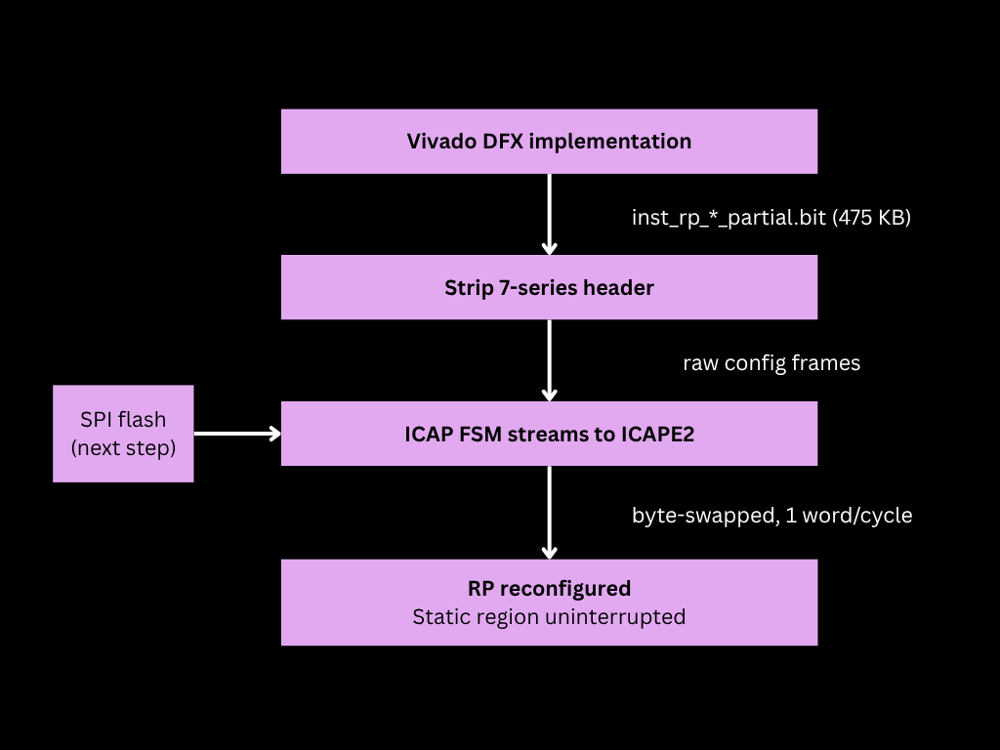
How a partial bitstream gets from Vivado into the FPGA. The ICAPE2 streaming step is done. SPI flash storage is what's left.
Vivado generates the partial bitstreams as part of the DFX implementation flow. Running bitstream generation on impl_1 automatically pulls in child_0_impl_1 as well:
impl_1/top.bit 3,825,904 bytes full config
impl_1/inst_rp_matrix_rm_2x2_partial.bit 475,685 bytes partial 2x2
child_0_impl_1/inst_rp_matrix_rm_3x3_partial.bit 475,685 bytes partial 3x3Both partial bitstreams are the same size. The partial covers the full frame range of the pblock regardless of how much logic is actually inside it. At 475 KB each they're too large to store in simple ROM. The plan is the Arty's onboard Winbond 128 Mb SPI flash: store both partials at known addresses and have the ICAP controller read them out over SPI on demand.
For now, partial programming works fine over JTAG via Vivado Hardware Manager. Load top.bit first, then program either partial bitstream directly onto the device. The static region stays running the whole time.
Implementation Results
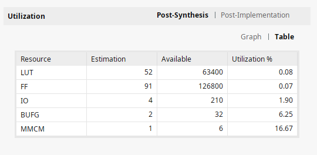
Post-synthesis utilization, static region only: 52 LUTs and 91 FFs. The RMs are synthesized out-of-context so they don't show up here.
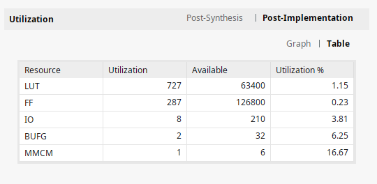
Post-implementation utilization with the 2×2 RM active: 727 LUTs, 287 FFs total. The jump from synthesis is the RM being pulled in during implementation.
| Metric | impl_1 (2×2) | child_0_impl_1 (3×3) |
|---|---|---|
| LUTs | 727 (1.15%) | 2055 (3.24%) |
| FFs | 287 (0.23%) | 685 (0.54%) |
| Failed Routes | 0 | 0 |
| Critical DRC Violations | 0 | 0 |
| WNS | +2.573 ns | +2.573 ns |
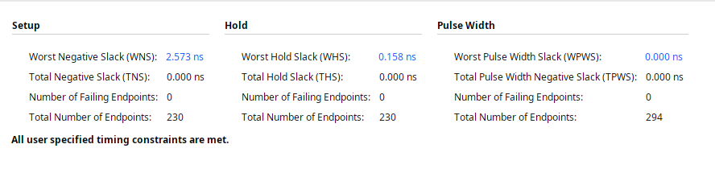
Timing summary: WNS 2.573 ns, TNS 0 ns, 0 failing endpoints. All constraints met.
Power
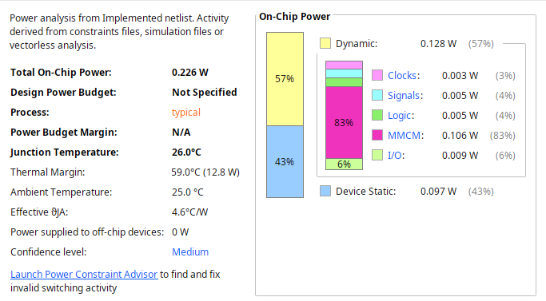
On-chip power: 0.226 W total. The MMCM is 83% of dynamic power at 0.106 W, running continuously regardless of whether the RP is being reconfigured.
| Component | Power | % of Dynamic |
|---|---|---|
| MMCM | 0.106 W | 83% |
| I/O | 0.009 W | 6% |
| Signals | 0.005 W | 4% |
| Logic | 0.005 W | 4% |
| Clocks | 0.003 W | 3% |
| Device Static | 0.097 W | N/A |
The real overhead of DPR is not area. The design uses 1 to 3% of available LUTs. It's the MMCM burning 0.106 W constantly. The reconfigurable logic itself contributes almost nothing to dynamic power.
Repository
All sources, constraints, and bitstreams are at github.com/cigi10/artya7100_dpr_matmul.
src/:top.v,clocks.v,icap_ctrl.v,rm_2x2.v,rm_3x3.vconstrs/:top_io.xdcandpblock.xdc(implementation only)bitstreams/: full and both partial .bit files, ready to programdocs/: DRC, timing, utilization, and power reports for both impl runs
What's Next
The next step is getting real partial bitstream data into the ICAP controller via SPI flash. That means adding a SPI flash controller to the static region, storing both partial bitstreams at known flash addresses, and updating the ICAP FSM to handle variable-length transfers instead of fixed 8-word ROMs. The DFX infrastructure (pblock, constraints, RM interfaces, bitstream generation) is all correct. It's a data plumbing problem at this point.
Technical details:
- FPGA: Digilent Arty A7-100 (XC7A100T-1CSG324C)
- Family: Artix-7
- Tool: Vivado 2025.2
- Clock: 100 MHz (MMCME2_ADV, ZHOLD compensation)
- Reconfigurable modules: 2×2 and 3×3 pipelined matrix multiply
- Partial bitstream size: 475 KB each
- ICAP interface: ICAPE2 primitive, self-managed FSM, byte-swap required
- Repository: github.com/cigi10/artya7100_dpr_matmul